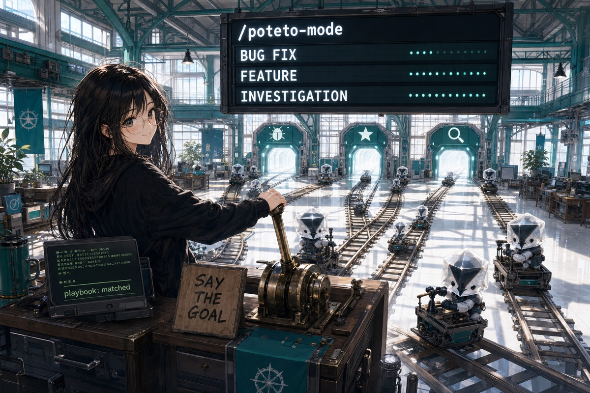

pstack 简体中文译本
想要快，先深入。阅读完整中文技能、操作手册和参考材料，同时保留 pstack 的工程结构、名称与调用方式。
从这里阅读
| 内容 | 入口 |
|---|---|
| 总览、原安装说明、全部技能及原则 | README.md |
| 从设置到第一个任务、验证与持续运行 | pstack 指南 |
| 主要任务入口与二十三份操作手册 | poteto-mode |
| 根据任务选择技能和提示词 | poteto-help |
| Claude Code 的名称和能力对应关系 | Claude Code 适配说明 |
| 尚未启用的 Slack 问题分诊与复现资料包 | benny 说明 |
原有 Markdown 均在原路径全文翻译，技能参考材料和模板也一并保留。阅读软件需支持 Markdown；本页面可以直接用浏览器打开。
使用这份中文译本
当前交付位于本地工作区 /Users/zxj/Developer/open-source/pstack-cn。你可以从上面的入口阅读，也可以在 skills/<name>/SKILL.md 中查阅某项技能及其相对路径引用。
仓库名称为 pstack-cn，工程内部仍叫 pstack。技能、Agent、包名和命令命名空间没有改名，例如 /poteto-mode；Claude Code 的插件调用示例仍是 /pstack:poteto-mode。技能之间的依赖按 README 的表格保留，导入时应一起考虑。
README 中的 npx skills add backnotprop/pstack 指向原镜像；/add-plugin pstack 及 pstack@cursor-plugins 指向原插件来源。这些命令保留原本含义，不能据此认为会安装中文译本。
本次没有发布中文仓库、安装或启用插件，也没有在各宿主中验证中文目录的安装流程。因此这里不提供声称已验证可用的中文远程安装命令。若要接入本地译文，请按所用宿主支持的本地技能加载方式，选用本工作区的技能文件，并核对上述依赖和相对路径。
文档中的自动化、外部消息、提交、合并和部署步骤是技能材料，不会因你阅读本译本而被执行。benny 仍须完成其配置、显式授权和线程安全检查后才能启用。
来源、版本与署名
本译本以 backnotprop/pstack 的固定提交为源；该项目是 cursor/plugins/pstack 的独立镜像（standalone mirror）。保留 Poteto、Lauren Tan、镜像维护者 backnotprop 及相关贡献者署名。镜像维护者不代表全部内容的原作者。
正文已经中文翻译。README 的 mirror:start 和 mirror:end 原同步标记仍保留；其中关于英文原文“unchanged”的说明描述的是源镜像基线，不能理解为本中文正文未经修改。版本和来源链接均保持固定基线含义。
许可证、版权及法律声明保留原文，见 LICENSE。镜像维护关系见 MIRROR.md，历史同步记录见 SYNC-LOG.md。
图片中文解读
原始 PNG/JPG 文件和文件名保持不变。下列说明覆盖图中的关键文字与含义，无需依赖英文图片理解流程。assets/logo.png 是戴眼镜的长发卡通人物吃烤红薯的品牌图，没有需要翻译的英文。

统一入口与路由
/poteto-mode 是统一入口。BUG FIX、FEATURE、INVESTIGATION 分别指缺陷修复、功能开发、调查。SAY THE GOAL 是“说明目标”，playbook: matched 是“操作手册：已匹配”。说清目标，由智能体选择流程。
先理解机制与历史
/how 回答“如何工作”，/why 回答“为何如此”。TRACE IT FIRST 是“先追踪清楚”，evidence: cited 是“证据：已引用来源”。改动前先读懂机制、历史并提供证据。
设计、比较与对抗审查
三个方案对应 /architect、/arena 和 /interrogate。BREAK IT 是“尝试击破它”，candidates: 3 是“三个候选方案”。先设计并行备选方案，再比较和审查。
验证真实产物
PROVE IT 是“证明它”，REAL THING ONLY 是“只验证真实产物”，verify: pass 是“验证：通过”，evidence: captured 是“证据：已捕获”。编译成功不能代替真实行为证据。
明确完成条件的持续运行
DECISION LOG 是“决策日志”，BUILD LOOP ACTIVE 是“构建循环正在运行”，DONE = CHECKS PASS 是“完成 = 检查通过”，agents: 4 running 是“四个智能体正在运行”。/loop 保留为原命令。图意是通过明确条件、持续检查和日志支持自主运行。
复用配方并反复检查
图上 /how、/tdd、/loop 是原命令。RECIPES 是“配方”，FOCUS BUILD REPEAT 是“专注、构建、重复”，context: guarded 是“上下文：受到保护”。复用明确提示词与工程习惯，执行并检查。
镜像页眉和赞助卡 SVG 的自然文字、标题与无障碍描述已译。品牌 pstack、Plannotator、Inbox，以及命令、链接和图形关系保持原样。
为什么仍能看到英文
API、CLI、MCP、JSON、YAML、TLA+、TLC、Mermaid、Git 等规范与产品专名保留英文；命令、路径、配置键、技能 ID、占位符、模型 slug、协议标签和精确 UI 选择器也保持兼容。需要按原文输入的标签和模板结构配有中文解释。
technical-writing 和 unslop 包含英语语法与写作正反例，因此保留原例并提供中文解读。teach 及部分提示词的原文明确要求英语表达，译文忠实保留这一要求；本次没有改写技能的语言策略。
测试、快照、TLC 输出及状态图测试语料保留原字节，其中的英文是机器验证内容。许可证和版权原文、原始署名与来源 URL 同样保留。维护清单、术语表和实际验证记录位于 docs/localization/。